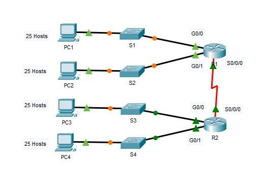

| Device | Interface | IP Address | Subnet Mask | Default Gateway |
|---|---|---|---|---|
| R1 | G0/0 | 192.168.100.1 | 255.255.255.224 | N/A |
| G0/1 | 192.168.100.33 | 255.255.255.224 | N/A | |
| S0/0/0 | 192.168.100.129 | 255.255.255.224 | N/A | |
| R2 | G0/0 | 192.168.100.65 | 255.255.255.224 | N/A |
| G0/1 | 192.168.100.97 | 255.255.255.224 | N/A | |
| S0/0/0 | 192.168.100.158 | 255.255.255.224 | N/A | |
| S1 | VLAN 1 | 192.168.100.2 | 255.255.255.224 | 192.168.100.1 |
| S2 | VLAN 1 | 192.168.100.34 | 255.255.255.224 | 192.168.100.33 |
| S3 | VLAN 1 | 192.168.100.66 | 255.255.255.224 | 192.168.100.65 |
| S4 | VLAN 1 | 192.168.100.98 | 255.255.255.224 | 192.168.100.97 |
| PC1 | NIC | 192.168.100.30 | 255.255.255.224 | 192.168.100.1 |
| PC2 | NIC | 192.168.100.62 | 255.255.255.224 | 192.168.100.33 |
| PC3 | NIC | 192.168.100.94 | 255.255.255.224 | 192.168.100.65 |
| PC4 | NIC | 192.168.100.126 | 255.255.255.224 | 192.168.100.97 |
In this activity, you are given the network address of 192.168.100.0/24 to subnet and provide the IP addressing for the Packet Tracer network. Each LAN in the network requires at least 25 addresses for end devices, the switch and the router. The connection between R1 to R2 will require an IP address for each end of the link.
Step 1: Subnet the 192.168.100.0/24 network into the appropriate number of subnets.
e. Calculate the binary value for the first five subnets. The first two subnets have been done for you.
| Subnet | Network Address | Bit 7 | Bit 6 | Bit 5 | Bit 4 | Bit 3 | Bit 2 | Bit 1 | Bit 0 |
|---|---|---|---|---|---|---|---|---|---|
| 0 | 192.168.100. | 0 | 0 | 0 | 0 | 0 | 0 | 0 | 0 |
| 1 | 192.168.100. | 0 | 0 | 1 | 0 | 0 | 0 | 0 | 0 |
| 2 | 192.168.100. | 0 | 1 | 0 | 0 | 0 | 0 | 0 | 0 |
| 3 | 192.168.100. | 0 | 1 | 1 | 0 | 0 | 0 | 0 | 0 |
| 4 | 192.168.100. | 1 | 0 | 0 | 0 | 0 | 0 | 0 | 0 |
f. Calculate the binary and decimal value of the new subnet mask.
| First Octet | Second Octet | Third Octet | Bit 7 | Bit 6 | Bit 5 | Bit 4 | Bit 3 | Bit 2 | Bit 1 | Bit 0 |
|---|---|---|---|---|---|---|---|---|---|---|
| 11111111 | 11111111 | 11111111 | 1 | 1 | 1 | 0 | 0 | 0 | 0 | 0 |
| 255. | 255. | 255. | 224 | |||||||
g. Fill in the Subnet Table, listing the decimal value of all available subnets, the first and last usable host address, and the broadcast address.
| Subnet Number | Subnet Address | First Usable Host Address | Last Usable Host Address | Broadcast Address |
|---|---|---|---|---|
| 0 | 192.168.100.0 | 192.168.100.1 | 192.168.100.30 | 192.168.100.31 |
| 1 | 192.168.100.32 | 192.168.100.33 | 192.168.100.62 | 192.168.100.63 |
| 2 | 192.168.100.64 | 192.168.100.65 | 192.168.100.94 | 192.168.100.95 |
| 3 | 192.168.100.96 | 192.168.100.97 | 192.168.100.126 | 192.168.100.127 |
| 4 | 192.168.100.128 | 192.168.100.129 | 192.168.100.158 | 192.168.100.159 |
| 5 | 192.168.100.160 | 192.168.100.161 | 192.168.100.190 | 192.168.100.191 |
| 6 | 192.168.100.192 | 192.168.100.193 | 192.168.100.222 | 192.168.100.223 |
| 7 | 192.168.100.224 | 192.168.100.225 | 192.168.100.254 | 192.168.100.255 |
Step 1: Configure R1 LAN interfaces (G0/0 & G0/1) and activate them.
Step 2: Configure IP addressing and default gateway on Switch S3.
Step 3 & Step 4: Configure PC4 and Verify Connectivity (Ping Test).